01 / MATERIA
Pintura al óleo
Color, textura y el tiempo de observar una imagen antes de dar la siguiente pincelada.
ESTUDIANTE DE INGENIERÍA DE SOFTWAREARTE / DISEÑO DIGITAL / VIDEO
Construyo experiencias digitales.
Con una mirada formada en el arte.
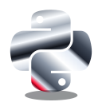
Python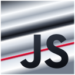
JavaScriptAPI REST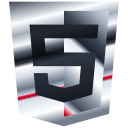
HTML
React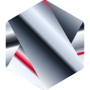
Node.js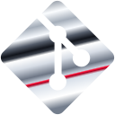
Git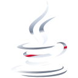
JavaJUnit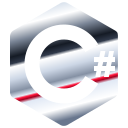
C#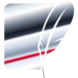
SQLite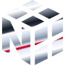
NumPy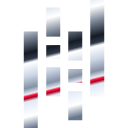
pandas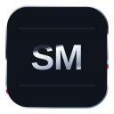
Statsmodels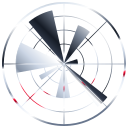
Matplotlib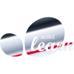
scikit-learn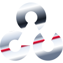
OpenCV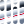
MediaPipe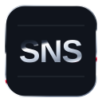
Seaborn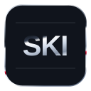
scikit-image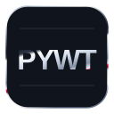
PyWavelets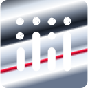
PlotlyDash / Bootstrap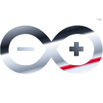
ArduinoPySerial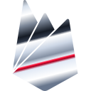
Firebase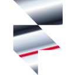
Framer Motion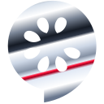
Cucumber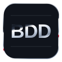
Serenity BDD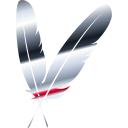
Maven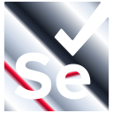
Selenium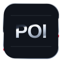
Apache POI01 / PROYECTOS PROPIOS
Interfaces, inteligencia artificial y simulaciones.
Una selección de lo que he construido y aprendido, con el código abierto para explorarlo.
También forman parte de mi historia: primeros ejercicios, prototipos, pruebas y cuadernos universitarios. Cada uno tiene su ficha y enlace al repositorio.
LABORATORIO / ROBÓTICA Y VISIÓN
Un brazo que construí para llevar el código al mundo físico. La mano se convierte en una instrucción; la instrucción, en movimiento.
Explorar el código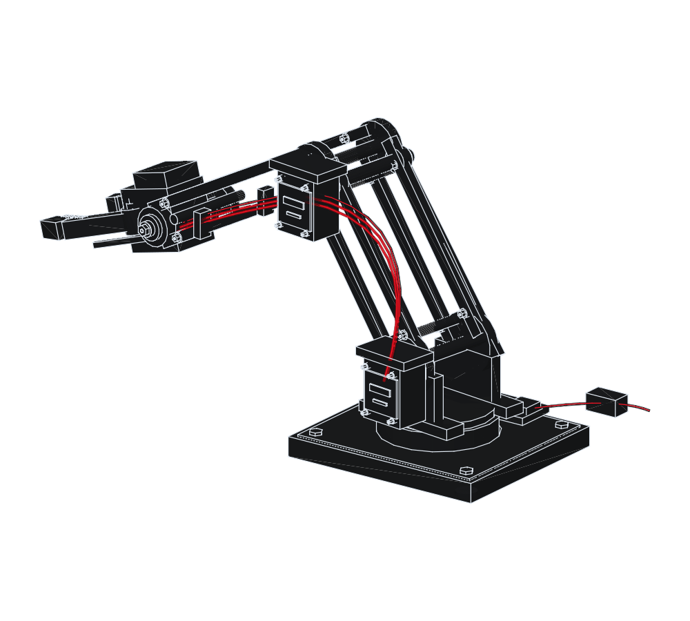
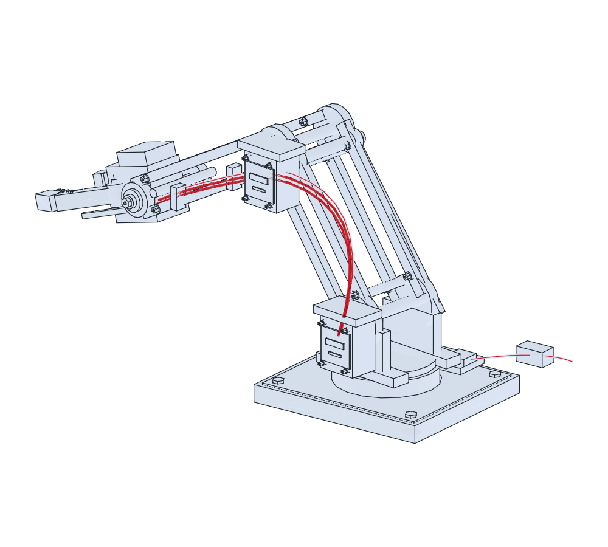
Arrastra para girar. Con teclado: flechas para girar, espacio para pausar, Inicio para restablecer.
Plano 3D inspirado en mi montaje.
ExplorarModelo preparado. La vista 3D se activa al llegar a esta sección.
OpenCV captura la imagen y MediaPipe localiza los puntos de la mano.
Python transforma posición y distancia entre dedos en órdenes por puerto serie.
Arduino acciona la base, la extensión y la pinza del brazo.
02 / MI FORMA DE CREAR
Construyo interfaces, exploro datos y convierto preguntas en código. De una ficha de personaje a una órbita en Python.
DISTINTAS HERRAMIENTAS.
LA MISMA CURIOSIDAD.
Interfaces con HTML, CSS, JavaScript, React y Next.js. Personajes de Marvel, recetas compartidas y el catálogo de Catania.
ESTRUCTURA / INTERACCIÓN / EXPERIENCIACuadernos de Python para explorar datos, comparar modelos y trabajar con imágenes. Visión por computador con OpenCV y MediaPipe.
PYTHON / MODELOS / VISIÓNUna app de Harry Potter con C# y .NET MAUI. Órbitas, campos eléctricos y métodos numéricos con SciPy, NumPy y Matplotlib.
C# / .NET MAUI / SIMULACIÓN03 / ARTE Y MIRADA
09 PIEZAS / ARCHIVO PERSONALHay ideas que empiezan lejos de una pantalla. En un cuaderno, entre retratos, sombras y líneas que todavía buscan su forma.
TRAZOS PROPIOS / JUANPABLO
8 años de formación
y práctica artística
Débora Arango · Envigado
Del óleo a la pantalla: composición, color y atención al detalle atraviesan mi trabajo visual y mis interfaces.
Desliza el cursor para revelar el papel original.
Pulsa un dibujo para verlo completo.
Flores, hueso y objetos: un estudio de contraste y composición sobre papel.
Volumen y expresión construidos con líneas que se cruzan.
Un cráneo y apuntes de geometría comparten la misma página de cuaderno.
Un estudio de gesto y movimiento entre el caballo y su jinete.
Retrato, vestuario y expresión en un estudio sobre papel texturizado.
Cabello recogido, mirada de perfil y sombras suaves.
Un estudio de estructura, luz y sombra en el rostro.
Líneas de perfil y masas de sombra sobre una página de notas.
Un retrato en color: prendas, pequeños detalles y una expresión dormida.
Color, textura y el tiempo de observar una imagen antes de dar la siguiente pincelada.
Tipografía, jerarquía y equilibrio para que una idea se entienda también desde lo visual.
Llevar esa mirada a interfaces y piezas digitales donde la forma y la interacción se acompañan.
04 / DETRÁS DE LA PANTALLA
Soy Juanpablo, estudiante de último año de Ingeniería de Software, con una mirada que también viene del arte, la pintura y el diseño.
Trabajo entre el desarrollo web, las aplicaciones y los cuadernos de Python. En mi GitHub conviven proyectos personales, ejercicios de aprendizaje y trabajos universitarios, algunos desarrollados en equipo.
Mi recorrido une ocho años de formación artística, pintura al óleo y diseño gráfico y digital con el desarrollo de software. También edito video y sigo explorando cómo una idea puede convertirse en una imagen, una interfaz o una experiencia.
MENTE TÉCNICA.
ESPÍRITU INQUIETO.
LAS BUENAS IDEAS EMPIEZAN CON UN HOLA